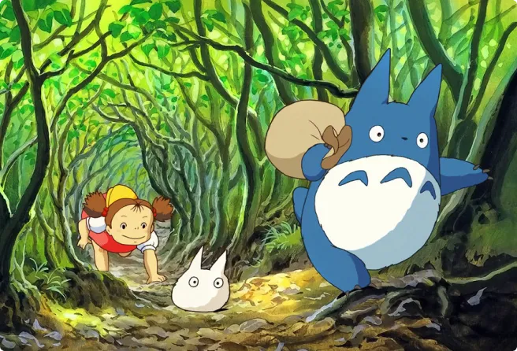

"The wind rises"
Released in 2013, this movie from the Ghibli studios is about a love story between an engineer and a young girl.
read more
" Hayao Miyazaki Cartography of a universe ”
"Hayao Miyazaki Cartography of a universe" is a book written by Raphaël Colson and Gaël Régner to explain and analyze the movie produced by Hayao Miyazaki. His films often follow the same pattern and this book helps to understand them.
Currently 81 years old, he began his career at 22 years in the animation field as an intervallist. He had to draw the different steps of a movement made by a key animator so that it would be fluid.
The job of intervallist is an essential part to reach the position of key animator
extract from the book page 16
Essentially because it needs to draw characters with various attitudes and positions. Hayao Miyazaki will become a key animator two years later.

I love Studio Ghibli movies. I watched them this summer and I wanted to see a precise analysis to understand them better.
IThey often follow the same thread, the main protagonist is pushed by his family or by events to travel alone. On his way, he meets his half to form a team with.
Once the setting is set, we can now turn our attention to the characters. If most of them lead a personal quest, we notice that all of them systematically act in pairs, or more exactly in couples: boy/girl, man/woman. This choice is by no means insignificant, for [...] the individual cannot exist without the others.
In their overwhelming majority, these couples are formed by chance meeting.These characters display personalities that are all distinct from one another. The same is true of each journey, individual or collective, which is singular in relation to the universal framework represented by the master plan.
from the book p 219
We can also notice that in the last movies, female characters are put forward and more important. In Chihiro's Journey or The Moving Castle, women must accomplish quests to be free to go.

The first stage of a Ghibli film is a journey, the main character is looking for his place and wants to open up and discover the world. Unfortunately, the society does not accept him and ends up rejecting him.
Everything starts in a closed space, a haven of peace, even if life is difficult.
The majority of these communities live their relationship to the world by favorise closure rather than openness. This withdrawal very clearly evokes the history of how Japanese villages function.
from the book p 232
The key part that differentiates Hayao Miyazaki's movies from the others is the dream dimension. This fantastic part is present in each movie to help the characters to accomplish their quest. In The Wind Rises, Jirô talks to a famous aeronautical engineer through his dreams.
In his beginning of animation Hayao Miyazaki worked as a scenic designer for the episodes of the series Heidi broadcast in 1974 in Japan.
Which is amazing because Heidi was one of the first cartoons I watched when I was young!
Released in 2013, this movie from the Ghibli studios is about a love story between an engineer and a young girl.
read more

See the other movie realised by Hayao Miyazaki.
read more